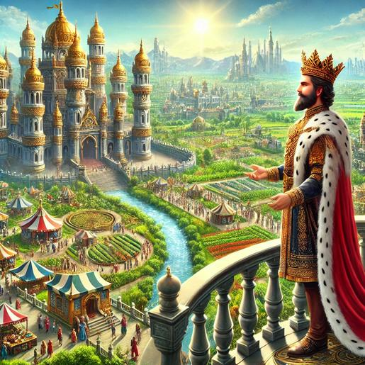
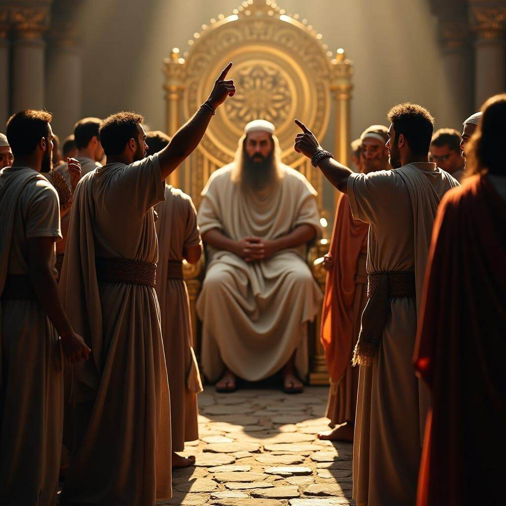
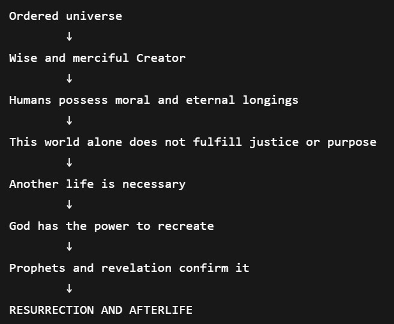

The Tenth Word (Haşir Risalesi / “Treatise on Resurrection”) is one of the most famous sections of The Words by Said Nursi.
Its main goal is to argue that resurrection after death is rational, necessary, and consistent with God’s justice, mercy, and power.
Imam Nursi builds the argument mostly through analogies, observations of nature, and theological reasoning.
Core Idea
The central claim is:
If God created the universe with wisdom, justice, mercy, and purpose, then human life cannot end meaninglessly in death. Therefore, resurrection and an afterlife must exist.
Imam Nursi argues that:
- Human beings desire permanence, justice, beauty, and meaning.
- Many injustices remain unresolved in this world.
- Divine justice and mercy require a final realm of judgment.
The Kingdom Analogy
A major part of the Tenth Word imagines a magnificent kingdom ruled by a wise king.
The kingdom is:
- perfectly organized,
- full of generosity and beauty,
- governed with wisdom and order.

Imam Nursi asks, would such a king allow:
- chaos to triumph permanently,
- the obedient and rebellious to receive the same end,
- all achievements and meanings to vanish into nothing ?
His answer is no. A truly just ruler would establish:
- a final court,
- rewards,
- accountability,
- and a permanent realm.

The analogy represents:
- the king → God,
- the kingdom → the universe,
- the final court → resurrection and judgment.
Imam Nursi imagines a magnificent kingdom ruled by a wise king. A just ruler would not allow all achievements and moral distinctions to disappear forever. Therefore, a final court and permanent realm must exist.
Spring as Evidence of Resurrection
One of Imam Nursi’s strongest recurring themes is the renewal of nature every spring.
He argues:
- Every winter resembles death.
- Every spring resembles resurrection.
- Millions of plants and creatures are “revived” after appearing dead.
So if God revives nature repeatedly before our eyes, resurrecting humanity is not difficult.
This is one of his key logical moves:
- resurrection is not “strange”
- we already witness smaller examples constantly in creation.
Human Beings Are Not Created Pointlessly
Imam Nursi repeatedly emphasizes that humans are unique:
- conscious,
- morally responsible,
- capable of love, art, worship, and reflection.
He argues it would contradict divine wisdom if:
- humans were created with infinite hopes,
- yet destroyed permanently after a short worldly life.
He says worldly life looks more like:
- a test,
- a field of cultivation,
- or a temporary classroom, rather than the final destination.
Justice Requires an Afterlife
Another major argument, in this world:
- tyrants sometimes prosper,
- innocent people suffer,
- good deeds often go unrewarded.
If there were no afterlife, perfect justice would never occur.
Imam Nursi concludes:
- Divine justice requires a final judgment.
- Heaven and hell complete the moral order that appears unfinished here.
God's Power Makes Resurrection Easy
Imam Nursi also argues that resurrection is easy relative to divine power, he often uses reasoning like:
- creating something the first time is harder than recreating it,
- the God who created the universe from nothing can recreate humans after death.

He compares it to:
- an army being gathered again with a trumpet call,
- or a tree returning from a seed each spring.
Emotional and Spiritual Tone
The Tenth Word is not only philosophical. It is also deeply emotional and devotional.
It aims to transform:
- fear of death → into hope,
- despair → into trust,
- temporary life → into meaningful preparation.
For Imam Nursi, belief in resurrection gives meaning to:
- suffering,
- morality,
- love,
- loss,
- and human destiny.
The Tenth Word argues that:
the order, mercy, justice, beauty, and continual renewal seen in creation all point toward the reality of resurrection and eternal life.

The 29 Truths
Overall Structure
The truths form a cumulative argument: nature, conscience, revelation, divine justice, and human existence all point toward resurrection and eternal life.